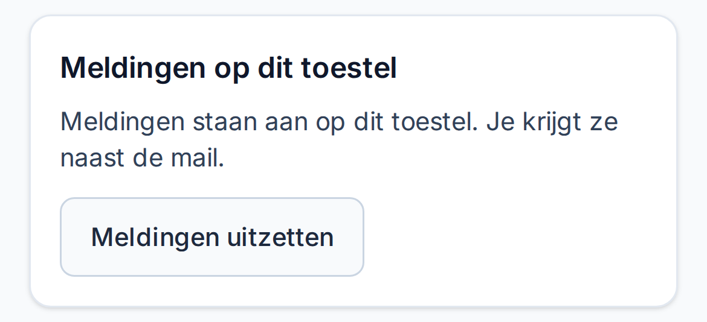

<!doctype html>
<html lang="nl">
<head>
<meta charset="utf-8">
<title>Meldingen aanzetten – iPhone</title>
<link rel="stylesheet" href="../lib/stage.css">
</head>
<body>
<script type="module">
import { tl, buildStage, statusBar, appScreen, localBox, tap, swipe, highlight, caption, camera, intro, outro, loadBoxes, ready, el, css } from '../lib/ui.js';
import { iosHome, iosAlert, iosBanner } from '../lib/ios.js';

const boxes = await loadBoxes();
const s = buildStage({ title: 'Meldingen aanzetten', chip: 'iPhone' });
const cam = camera(s);

// Lagen: beginscherm, Planbord, dialoog, melding en de laag met tikjes.
const home = iosHome(s.screen, { planbord: 6 });
el('div', 'homebar light', home.layer);
const appLayer = css(el('div', 'layer', s.screen), { background: '#f8fafc' });
statusBar(appLayer);
const mijn = appScreen(appLayer, 'mijn', boxes);
el('div', 'homebar', appLayer);
const card = boxes.mijn.pushCard;
const on = css(el('div', '', mijn.content, ''), {
  position: 'absolute', left: 0, top: card.y - 8, width: 390, height: card.h + 16, background: '#f8fafc',
});
const alert = iosAlert(s.screen, {
  title: '“Planbord” wil je meldingen sturen',
  message: 'Meldingen kunnen bestaan uit waarschuwingen, geluiden en symboollabels. Deze kunnen worden geconfigureerd in Instellingen.',
  cancel: 'Sta niet toe',
  confirm: 'Sta toe',
});
const banner = iosBanner(s.screen, { title: 'Planbord', body: 'Je valt in op ma 12 okt in Den Bosch (13:00–18:00)' });
el('div', 'island', s.screen);
const fx = css(el('div', 'layer', s.screen), { zIndex: 85, overflow: 'visible' });

await ready();
const alertBox = localBox(alert.alert, s.screen);
css(alert.alert, { top: `${(844 - alertBox.h) / 2}px` });
const icon = localBox(home.planbordIcon.querySelector('.ic'), s.screen);
const confirm = localBox(alert.confirm, s.screen);
const iconC = { x: icon.x + icon.w / 2, y: icon.y + icon.h / 2 };

const maxScroll = boxes.mijn.height - mijn.height;
const onScreen = (b) => ({ x: b.x, y: mijn.top + b.y - maxScroll, w: b.w, h: b.h });
const button = onScreen(boxes.mijn.pushButton);
const buttonC = { x: button.x + button.w / 2, y: button.y + button.h / 2 };
const cardOn = onScreen({ ...boxes.mijn.pushCardOn });
const confirmC = { x: confirm.x + confirm.w / 2, y: confirm.y + confirm.h / 2 };

// 0 – 1,3: titel en telefoon
intro(s);

// 1. Open Planbord via het icoon
caption(s.captions, 1, 'Open Planbord via het icoon op je <b>beginscherm</b>', null, 1.2, 5.0);
highlight(fx, icon, 1.9, 2.85, { pad: 5, radius: 18 });
tap(fx, 3.0, iconC.x, iconC.y, { from: { x: 300, y: 720 } });
css(appLayer, { transformOrigin: `${iconC.x}px ${iconC.y}px` });
tl.prop(appLayer, 'opacity', 0).to(3.12, 3.4, 1, 'out');
tl.prop(appLayer, 'scale', 0.16).to(3.12, 3.62, 1, 'outQuint');
tl.prop(home.layer, 'scale', 1).to(3.12, 3.62, 1.08, 'out');

// 2. Scrollen naar het blok Meldingen op dit toestel
caption(s.captions, 2, '<b>Scrol</b> helemaal naar beneden', 'Daar staat het blok <i>Meldingen op dit toestel</i>.', 5.0, 9.3);
swipe(fx, 5.6, 6.3, { x: 300, y: 650 }, { x: 300, y: 260 });
tl.prop(mijn.content, 'scroll', 0).to(5.7, 8.7, maxScroll, 'out');

// 3. Tik op Meldingen aanzetten
caption(s.captions, 3, 'Tik op <b>Meldingen aanzetten</b>', null, 9.3, 12.4);
cam.zoom(9.4, 10.4, buttonC, 1.5, { x: 270, y: 455 });
highlight(fx, button, 10.4, 11.85);
tap(fx, 12.0, buttonC.x, buttonC.y);

// 4. Toestaan
tl.prop(alert.dim, 'opacity', 0).to(12.25, 12.5, 1, 'out').to(15.3, 15.55, 0, 'in');
tl.prop(alert.alert, 'opacity', 0).to(12.25, 12.5, 1, 'out').to(15.3, 15.5, 0, 'in');
tl.prop(alert.alert, 'scale', 1.12).to(12.25, 12.6, 1, 'out');
caption(s.captions, 4, 'Kies <b>Sta toe</b>', 'Je iPhone vraagt dit maar één keer.', 12.4, 15.6);
cam.zoom(12.5, 13.3, confirmC, 1.35, { x: 270, y: 430 });
highlight(fx, confirm, 13.5, 14.95, { pad: 2, radius: 10 });
tap(fx, 15.1, confirmC.x, confirmC.y);

// 5. Klaar: meldingen staan aan
tl.prop(on, 'opacity', 0).to(15.55, 15.9, 1, 'out');
cam.zoom(15.5, 16.3, { x: 195, y: cardOn.y + cardOn.h / 2 }, 1.3, { x: 270, y: 440 });
caption(s.captions, 'ok', 'Meldingen staan <b>aan</b>', 'Alleen op deze telefoon. Heb je er meer? Doe het daar ook.', 15.6, 19.6);
highlight(fx, cardOn, 16.4, 19.0, { pad: 4, radius: 18 });
cam.reset(19.3, 20.2);

// 6. Zo ziet een melding eruit
caption(s.captions, 5, 'Zo ziet een <b>melding</b> eruit', 'Bij een inval, een wijziging in je rooster, en om 16:00 als morgen afwijkt.', 19.6, 25.0);
tl.prop(banner, 'y', -170).to(20.5, 21.05, 0, 'outBack').to(24.3, 24.75, -170, 'in');
tl.prop(banner, 'opacity', 0).to(20.5, 20.7, 1, 'out').to(24.5, 24.75, 0, 'in');

outro(s, 25.0, 'Klaar!', 'Uitzetten kan op dezelfde plek, onderaan <b>Mijn rooster</b>.');
tl.end(28.0);
window.poster = 11.2;
tl.seek(0);
window.ready = true;
</script>
</body>
</html>
